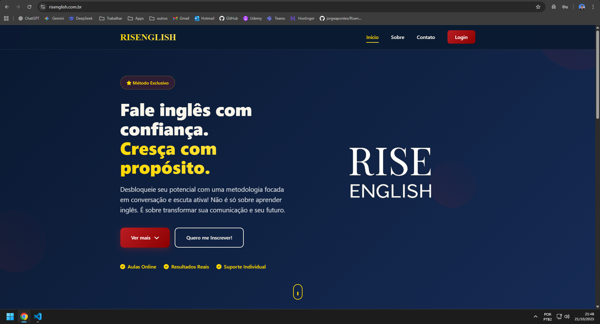

Jorge Pontes
Sobre mim:
Sou desenvolvedor com foco em Front-end e Back-end. Amo a tecnologia e estudo diariamente para escrever código de qualidade e me tornar cada vez melhor.
- 💻 Experiência com desenvolvimento Web e desktop;
- ⚙️ Conhecimento em diversas linguagens de programação;
- 🌍 Inglês avançado.
Meus Projetos
Aqui estão alguns dos projetos que já realizei!

O projeto, chamado Risenglish, é um sistema de gerenciamento de aulas de inglês. Nele, os professores podem fazer upload dos materiais utilizados nas aulas, controlar presenças e gerenciar outros detalhes de forma prática e profissional. Já os alunos têm acesso facilitado a todos os arquivos e informações em um único lugar.

JapiWiki: Ciência Cidadã na Serra do Japi. Registre avistamentos de fauna, flora e eventos ambientais. Contribua para a ciência e conservação!

Projeto feito com o intuito de treinar JavaScript e React.

Projeto simples e muito útil, para gerar QR Codes.

Realize automaticamente diversos cálculos utilizando várias fórmulas, retornando diferentes tipos de resultados!

Clone feito com inspiração na página de venda do iPhone 13 do site da Apple, para treinar CSS e JavaScript.
Minhas Skills
Veja as tecnologias que já tive experiência:
Front-end
Back-end
Frameworks e Bibliotecas
Bancos de dados
Tools